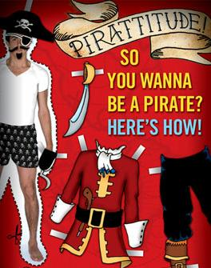

Pirating
Requirements: (List will expand)
Parrot
- rather than you talk and be
sociable, the Parrot, when trained well, will do this for you.
Eye
Patch - since you will be
pirating, and playing games all day, you'll need to rest one eye at a
time.
Hook
- for one hand, why? Oh,
I dunno, because you're a Pirate?
A
Swabbie - to help you in your
quest, or clean up the parrot crap, or be your goFor.
Gold
Pieces - aka Cash, to rent your
victims:
Since you may not have a job, you'll
have to either STEAL your money, or borrow the games, because lets face
it,
if you had a job, you would not have
to PIRATE your games, you'd buy them.
Pieces of Eight - aka Cash, but
is Silver. Give this to your swab when you sell your Pirated
games.
Matey(s)
- The people you call
"friends" that have money, and buy their games, that you borrow &
pirate from.
Fruit
- to prevent scurvey, since you
will be spending all your time INDOORS Pirating games, and not going
outside to play.
Barrel
of Soda -so you can drink it
straight from the tap.
A
Ship - to go to the store
and rent, or steal your victims (mum-ma or da-da take you).
Crew
- usually bothers and sisters
to do your chores, while you pirate & play games all day.
Growing
a Beard and Stache - well,
you might as well play the part.
A
refusal to read - Instructions are
too many pages to read over, so take a shot in the dark, like with a
cannon.
Provost - Someone to keep your
swabbies in line, should be your parents.
Wench - If you are fortunate
enough to get one. . . She will probably cost a lot, so maybe not.
Bucko - Will be the person that
tolerates you the most.
Coffer - Where you'll keep all
your illegal stuff.
Hang The Jib - You'll do this
when the stuff just isn't working right!